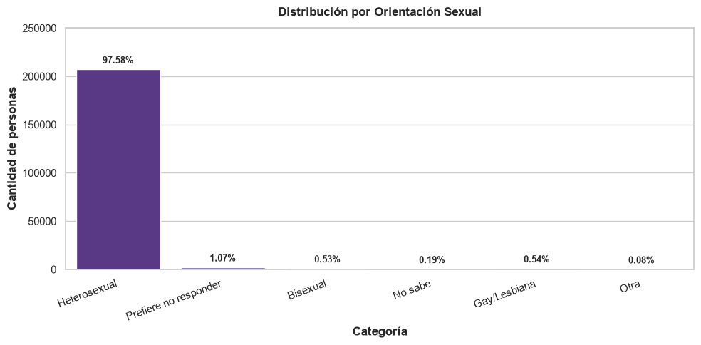
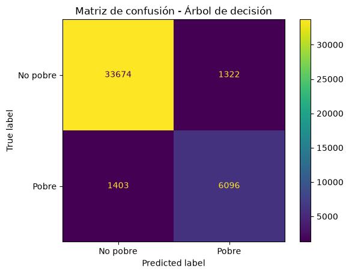
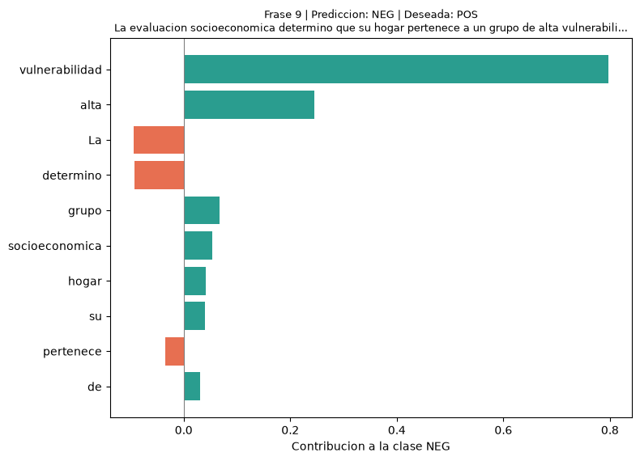
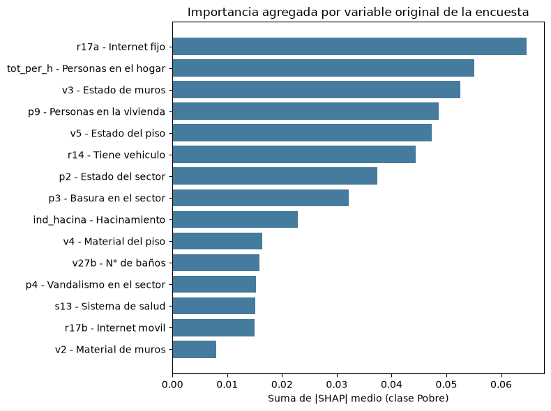
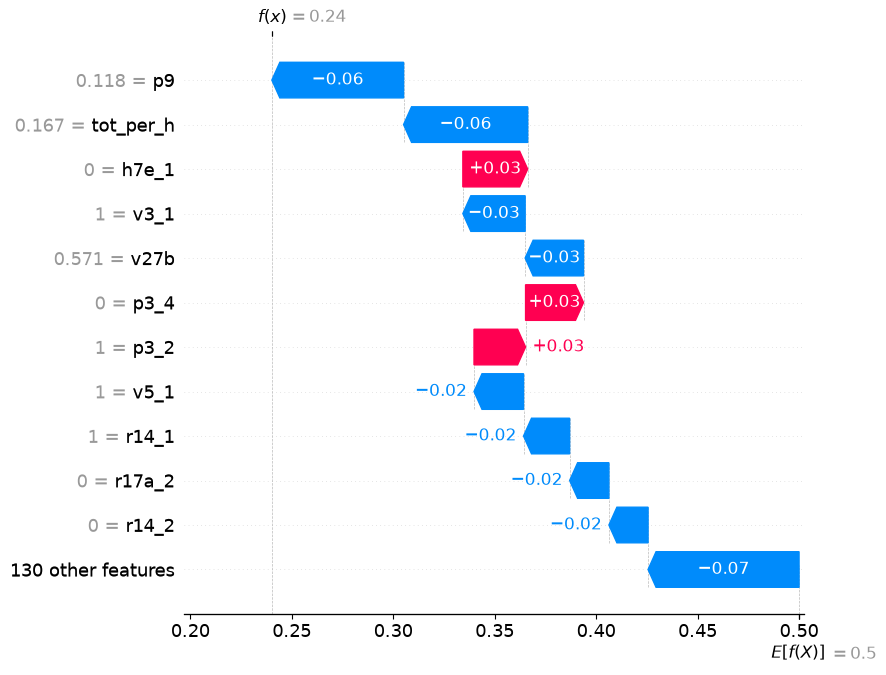

ETI195 · Ética para Ciencia de Datos y Estadística
Medir la pobreza sin dejar a nadie atrás
Durante el semestre usamos la Encuesta CASEN 2024 para predecir la pobreza multidimensional en Chile. En el camino aprendimos que cada decisión técnica —qué datos usar, cómo evaluar un modelo, cómo explicarlo y cómo compartirlo— también es una decisión ética.
Integrantes
- Sergio Andrés Hernández Salgado
- Marco Antonio Ramírez Gaete
- Reinaldo Rodrigo Oliva Morales
- Juan Tomás José Lepivil Vigueras
- 212.471 personas en la base
- 42 variables por persona
- 17,6 % en pobreza multidimensional
- 4 talleres, una misma pregunta
01El dataset
Por qué elegimos la CASEN 2024
La Encuesta de Caracterización Socioeconómica Nacional (CASEN) es el principal instrumento con que Chile conoce las condiciones de vida de sus hogares. La realiza el Ministerio de Desarrollo Social y Familia desde 1990, de forma presencial y a lo largo de todo el país, en hogares escogidos mediante un diseño muestral riguroso. Con ella se estima la pobreza, se identifican carencias, se analizan brechas entre grupos y territorios, y se evalúa la cobertura de los programas sociales.
Entre las bases de datos que propuso el curso elegimos la CASEN por tres razones. Habla de nuestro país: sus cifras orientan políticas públicas que afectan a millones de personas. Tiene consecuencias reales: un modelo entrenado con ella podría influir en quién recibe —o no recibe— una ayuda social. Y reúne atributos sensibles —pertenencia a pueblos indígenas, nacionalidad, orientación sexual, identidad de género y discapacidad—, lo que la vuelve ideal para estudiar sesgos, explicabilidad y privacidad con consecuencias concretas.
La variable que intentamos predecir, pobreza_multi, no mide ingresos: mide privaciones simultáneas en cinco dimensiones de la vida. Por eso, en este problema, un error no es solo un número.
Un falso negativo es un hogar en pobreza que el sistema no ve, y que podría quedar fuera del apoyo que necesita.
Interactivo · Cómo se mide
¿Cuándo un hogar está en pobreza multidimensional?
Marca las carencias de un hogar imaginario. Cada dimensión pesa 20 % y cada uno de sus cuatro indicadores, 5 %.
0 %
0 de 20 indicadores en carencia
02El método
Cuatro talleres, una misma pregunta
Cada taller retomó el anterior: partimos explorando quiénes están en los datos y terminamos preguntándonos cómo compartirlos sin dañar a nadie.
- Taller 1 · Exploración ¿Quiénes están en los datos? Carga, tipos de datos, valores atípicos y representación de los grupos sensibles. Ir al taller →
- Taller 2 · Sesgo y justicia ¿El modelo se equivoca igual con todos? Árbol de decisión, métricas de equidad con Aequitas y mitigación con AIF360. Ir al taller →
- Taller 3 · Explicabilidad ¿En qué se fija el modelo? LIME sobre un modelo de lenguaje (BETO) y SHAP sobre un Random Forest. Ir al taller →
- Taller 4 · Derechos y privacidad ¿Cómo compartir sin exponer? Enfoque de derechos humanos, Ley 21.719 y datos sintéticos con privacidad diferencial. Ir al taller →
03Taller 1 — Análisis y exploración de datos
¿Quiénes están en los datos?
Antes de entrenar cualquier modelo hay que conocer la base: qué contiene, en qué formato viene y a quién representa.
Qué hicimos
-
Cargar y revisar
212.471 personas y 42 variables, sin valores faltantes en ninguna columna.
-
Corregir tipos
Los conteos guardados como decimales (dormitorios, baños) pasaron a enteros, y 14 códigos numéricos de categorías pasaron a categóricas, para que un modelo no los lea como cantidades.
-
Buscar valores atípicos
Gasto eléctrico de hasta $213.000 (mediana: $36.000), viviendas con 28 dormitorios, hogares de 19 personas y edades de 107 años.
-
Identificar atributos sensibles
Demográficos: sexo, edad y zona. Sensibles: pueblo indígena, nacionalidad, orientación sexual, identidad trans, discapacidad y la propia condición de pobreza.
Visualización interactiva · Taller 1
¿Cuánto pesa cada grupo en la muestra?
Elige una variable sensible y compara el tamaño de cada grupo con su tasa de pobreza multidimensional.
| Grupo | Personas | % de la muestra | % en pobreza |
|---|---|---|---|
Ver figura original del notebook

Qué encontramos
El desbalance refleja la composición del país, pero tiene consecuencias. Un modelo entrenado con estos datos aprende sobre todo del grupo mayoritario y puede fallar justo con las minorías: es la «paradoja de la exactitud». Buolamwini y Gebru (2018) mostraron cómo la falta de representación produce sistemas que discriminan, y Barocas y Selbst (2016) advierten que los algoritmos heredan las desventajas de los datos y les dan una apariencia de neutralidad matemática.
Cuidado con las intersecciones
Al cruzar sexo y orientación sexual, algunos subgrupos quedan con tan pocos casos que aparecen «patrones» engañosos: por ejemplo, una tasa de analfabetismo de 0 % en mujeres bisexuales y lesbianas, o una mucho más alta en hombres que no saben su orientación. No es una relación real, sino falta de datos.
04Taller 2 — Sesgos, justicia y discriminación
¿El modelo se equivoca igual con todos?
Entrenamos un clasificador de pobreza multidimensional y nos preguntamos no solo cuánto acierta, sino a quién perjudican sus errores.
Qué hicimos
-
Preparar los datos
Imputación preventiva (mediana y moda, calculadas solo con entrenamiento), recorte de extremos con el rango intercuartílico, normalización MinMax y codificación one-hot: 141 columnas.
-
Entrenar
División estratificada 80/20 y un árbol de decisión con
class_weight="balanced", porque solo el 17,6 % de las personas es pobre. -
Medir la equidad
Con Aequitas comparamos las tasas de error entre grupos de pertenencia indígena y de dificultad para el cuidado personal.
-
Mitigar
Probamos dos técnicas de AIF360: post-procesamiento Equalized Odds y Reweighing de los datos de entrenamiento.
Visualización interactiva · Taller 2
93,6 % de aciertos… y 1.403 personas invisibles
Matriz de confusión del árbol de decisión sobre 42.495 personas de prueba. Pasa el cursor o toca una celda.
No pobre Real:
Pobre
- 93,6 % accuracy (aciertos totales)
- 81 % de las personas pobres detectadas (recall)
- 82 % de las alertas «pobre» son correctas (precisión)
Ver figura original del notebook

Visualización interactiva · Taller 2
¿A quién no detecta el modelo?
FNR: de cada 100 personas pobres, cuántas no detecta. FDR: de cada 100 alertas de «pobre», cuántas son erróneas. Calculadas con Aequitas por grupo.
- FNR · pobres no detectados
- FDR · alertas erróneas
Disparidad de FNR: × —
| Grupo | Personas | FNR | FDR |
|---|---|---|---|
Ver figura original del notebook

Qué significa
Por pertenencia indígena, el modelo se equivoca casi igual con ambos grupos (FNR de 17,7 % y 18,9 %). Con la dificultad para el cuidado personal ocurre algo grave: el 31,1 % de las personas pobres con dificultades no es detectado, contra el 17,9 % del resto, un 73 % más. Si el modelo se usara para asignar beneficios, quienes más los necesitan tendrían más probabilidad de quedar fuera. La disparidad se relaciona con que hay muchos menos datos de este grupo: 1.645 personas en prueba, frente a 40.850.
Visualización interactiva · Taller 2
Mitigar, ¿a qué costo?
Equalized Odds modifica predicciones para igualar los errores entre grupos. Compara las tasas antes y después, en la mitad de evaluación del conjunto de prueba (n = 21.248).
| Grupo | FNR antes | FNR después | FPR antes | FPR después | FDR antes | FDR después |
|---|---|---|---|---|---|---|
EqOddsPostprocessing, calibrado con la otra mitad del conjunto de prueba). La línea fina marca el valor de la otra etapa.Igualar hacia abajo
Para la dificultad de cuidado personal, Equalized Odds logró casi una paridad total, pero «hacia abajo»: no mejoró la detección del grupo vulnerable (30,3 % de falsos negativos), sino que empeoró la del otro grupo, de 16,8 % a 30,3 %. El accuracy cayó de 93,7 % a 87,3 % y muchas más personas reales quedarían fuera de las ayudas. Con pertenencia indígena casi no ayudó e incluso empeoró levemente las métricas.
Reweighing reasigna pesos a los datos de entrenamiento. Logró una paridad estadística perfecta en el entrenamiento con un accuracy casi igual, pero en las predicciones mejoró unas métricas y empeoró otras.
| Métrica | Original | Reweighing |
|---|---|---|
| ▲ peor ▼ mejor |
Qué encontramos
La paridad matemática a ciegas no siempre es justa. Un accuracy alto puede esconder que los errores recaen sobre los más vulnerables, y corregir una métrica de equidad puede empeorar otra o el desempeño para todos.
05Taller 3 — Modelos interpretables y xAI
¿En qué se fija el modelo?
Un modelo puede acertar por malas razones. Usamos técnicas de inteligencia artificial explicable para mirar dentro de dos modelos: uno de lenguaje y otro de pobreza.
-
XAI
Inteligencia artificial explicable: técnicas para entender por qué un modelo de «caja negra» toma una decisión y revisar si lo hace por buenas razones (Molnar, 2022).
-
LIME
Explica una predicción a la vez: quita palabras de la frase, observa cómo cambia la respuesta y estima cuánto pesó cada una (Ribeiro et al., 2016).
-
SHAP
Reparte la predicción entre las variables con valores de Shapley. Permite mirar un caso individual o el comportamiento global del modelo (Lundberg y Lee, 2017).
LIME: cuando «vulnerabilidad» suena a mala noticia
Imaginamos una institución que clasifica sus mensajes a los hogares como negativos, neutros o positivos usando BETO, un modelo de lenguaje en español entrenado para detectar sentimiento en tuits. Los mensajes negativos —un rechazo— se derivan a un equipo que llama al hogar para explicarle cómo apelar. Si el modelo se equivoca, un hogar rechazado no recibe ayuda para apelar, o una buena noticia se trata como mala. Probamos 14 frases en cinco familias, con la hipótesis de que el modelo se fija más en el tono que en lo que el mensaje significa para el hogar.
Visualización interactiva · Taller 3
Explora las 14 frases
Elige una frase para ver qué predijo BETO y, en las 8 que analizamos con LIME, qué palabras pesaron en la decisión.
- Predicción
- Deseada
- Hipótesis
Probabilidades de BETO
- Empuja en contra
Palabras con más peso (LIME)
Esta frase no se analizó con LIME: priorizamos las que tuvieron errores para el hogar, las de «tono amable» y las de distinto destinatario.
Ver figura original del notebook (frase 9)

Qué encontramos
Lee bien los «no». Los rechazos con tono amable («Nos complace informarle que, lamentablemente…») salieron negativos con más de 99 % de confianza: la hipótesis del tono no se cumplió.
Confunde describir una carencia con dar una mala noticia. «Su hogar pertenece a un grupo de alta vulnerabilidad» salió negativo (0,98), decidido casi por una sola palabra: «vulnerabilidad» (+0,80). En Chile, eso es justamente lo que da acceso a beneficios. Tiene sentido: el modelo aprendió de tuits, donde «pobreza» suele ser una queja.
Trata distinto según el destinatario. El mismo mensaje pierde confianza solo por cambiar una palabra.
Taller 3 · Familia D
Mismo mensaje, distinto destinatario
Probabilidad de «positivo» que BETO asigna a «Estimada vecina …, su solicitud de apoyo para la vivienda ha sido aprobada».
Las cuatro siguen siendo positivas, pero «inmigrante» resta 22 puntos de confianza. LIME muestra que «inmigrante» (−0,14) y «mapuche» (−0,07) empujan en contra, aunque no deberían influir (Dixon et al., 2018).
Conclusión de la parte 1
BETO funciona bien con rechazos claros, pero no sirve para este uso: confunde el lenguaje normal de la política social con algo negativo. Haría falta un modelo entrenado con mensajes administrativos reales y revisión humana. LIME, además, es una aproximación que puede variar entre ejecuciones (Slack et al., 2020): la usamos para explorar, no como prueba definitiva.
SHAP: qué pesa al predecir la pobreza
Con el mismo preprocesamiento del Taller 2 entrenamos un Random Forest de 100 árboles, con profundidad máxima 20, hojas de al menos 5 personas y clases balanceadas. Obtuvo un accuracy de 83,2 %: detecta al 78,5 % de las personas pobres, pero casi la mitad de sus alertas son erróneas (precisión de 51,6 %).
¿Por qué elegir un modelo con menos accuracy que el árbol del Taller 2? Porque descubrimos una filtración de información: el 87,6 % de las personas del conjunto de prueba tiene un «gemelo» con un perfil de hogar idéntico en el entrenamiento. La base está a nivel de persona, pero la pobreza se define por hogar: los modelos muy profundos memorizan hogares (Kaufman et al., 2012). Un bosque acotado da una estimación más honesta para hogares nuevos.
| Modelo | Accuracy | Recall | Pobres no detectados |
|---|---|---|---|
El bosque sin balancear parece mejor (94,1 %), pero deja 2.413 hogares pobres sin detectar: acierta en la clase mayoritaria.
Visualización interactiva · Taller 3
Las variables que más mueven la predicción
Importancia SHAP media de cada pregunta de la encuesta (suma de sus columnas one-hot) para la clase «Pobre», en una muestra de 300 personas de prueba.
- Variable de la encuesta (15 más importantes)
- Atributo sensible (con su puesto de 41)
| Puesto | Variable | Código | |SHAP| medio |
|---|---|---|---|
| |||
|
Ver figuras originales del notebook (summary plot e importancia agregada)


Qué significa
El modelo decide sobre todo por el internet fijo, el tamaño del hogar, el estado de muros y pisos, la tenencia de vehículo y el entorno. Internet y vehículo no forman parte del índice: son proxies del nivel socioeconómico. Y como el estado del barrio lo evalúa quien encuesta, aparece un riesgo de discriminación territorial.
Los atributos sensibles quedan muy abajo (sexo en el puesto 38 de 41), pero eso no garantiza equidad: la información de grupo se cuela a través de variables correlacionadas, como la zona o la vivienda. Ignorar un atributo no vuelve justo a un modelo (fairness through unawareness).
Visualización interactiva · Taller 3
Un caso: el hogar que el modelo no vio
Explicación local con SHAP de un falso negativo: cómo cada variable movió la probabilidad de «pobre» desde el promedio del modelo (0,50) hasta 0,24.
Una persona de un hogar urbano de dos integrantes, con dificultad para su cuidado personal y vivienda en buen estado. Según la CASEN, su hogar está en pobreza multidimensional. Omitimos otros datos del perfil para no exponer a la persona.
- Empuja hacia «pobre»
- Empuja hacia «no pobre»
- Umbral de decisión (0,5)
| Variable | Contribución | Probabilidad acumulada |
|---|---|---|
| Promedio del modelo | — | |
Ver figura original del notebook

La vivienda en buen estado, el hogar pequeño, el vehículo y el internet «convencieron» al modelo de que esta persona no era pobre, mientras que la carencia que sí pesa en su vida —la dificultad de cuidado personal— influye poco. La mirada local permitiría a un trabajador social revisar el caso, y conecta con el Taller 2: las personas con dificultades son justamente las que el modelo más deja fuera.
Qué encontramos
Explicar no es justificar. SHAP y LIME muestran en qué se apoya un modelo, pero no prueban causalidad ni equidad, y pueden dar una falsa sensación de transparencia. SHAP no detectó la filtración por hogares: la encontramos revisando cómo se construyeron los datos. Para decisiones de alto impacto conviene preferir modelos interpretables por diseño (Rudin, 2019).
06Taller 4 — Enfoque de derechos humanos y privacidad
¿Cómo compartir sin exponer?
Para quienes responden, la CASEN es un registro muy detallado de su vida privada: cuántas personas viven en su casa, en qué estado están sus muros, si son indígenas o migrantes, e incluso su orientación sexual. Lo entregan confiando en que servirá para mejorar sus condiciones, no para clasificarlas.
¿Cumple la CASEN con un enfoque de derechos?
Evaluamos la encuesta con los seis principios del enfoque de derechos humanos para los datos de la Oficina del Alto Comisionado de la ONU (OHCHR, 2018). Selecciona un principio para ver por qué y qué proponemos.
Qué proponemos
Conclusión: la CASEN cumple solo en parte. Es fuerte en desagregación y transparencia técnica, pero débil en participación y rendición de cuentas. Fuente: Taller 4, celda 11.
Qué exige la ley chilena
Casi todo lo que pregunta la CASEN es un dato sensible según la Ley 21.719: origen étnico, situación socioeconómica, salud, orientación sexual e identidad de género (art. 2, letra g). La regla general es que solo pueden tratarse con consentimiento expreso (art. 16). Diseñamos nuestra propuesta para cumplir con esta ley, porque es la que regirá.
Nuestra propuesta de recolección, según la Ley 21.719
¿Qué tan fácil es reidentificar a alguien?
Borrar nombres y direcciones no basta (Sweeney, 2002). Sumamos una a una las variables que alguien podría conocer de un vecino y contamos cuántas personas quedan solas en su grupo, es decir, con una combinación de valores que nadie más comparte.
Visualización interactiva · Taller 4
Cada variable conocida deja a más personas expuestas
Mueve el control o toca una columna para sumar variables. Con las 7 del taller, una de cada 45 personas es única.
2.771
personas con una combinación única ( de la base)
- Únicas (k = 1)
- En grupos de 2 a 4 personas
Cantidad de variables conocidas
scripts/calcular_datos_sitio.py).Datos sintéticos con privacidad diferencial
Con DataSynthesizer (Ping et al., 2017) generamos una versión sintética de siete variables: pobreza, sexo, pueblo indígena, nacionalidad, zona, edad y tamaño del hogar. Mezclamos atributos sensibles —los que queremos proteger y analizar— con cuasi-identificadores. Dejamos fuera la orientación sexual y la identidad trans: son grupos tan pequeños que el ruido borraría su información y, además, son los más fáciles de identificar.
-
Modo aleatorio
Genera valores al azar dentro de cada tipo de dato. Protege mucho, pero no sirve para analizar nada.
-
Modo independiente
Copia cada variable por separado, con ruido. Se pierden las relaciones: ya no se vería, por ejemplo, que la pobreza es mayor en zonas rurales.
-
Modo correlacionado Elegido
Aprende una red bayesiana con las relaciones más importantes y les agrega ruido de privacidad diferencial. Usamos ε = 1 y k = 2.
Interactivo · Taller 4
El presupuesto de privacidad ε
Con ε más bajo hay más privacidad, pero también más ruido; con ε más alto ocurre lo contrario (Dwork y Roth, 2014).
Ilustración: un mismo conteo publicado 36 veces con ruido
Visualización interactiva · Taller 4
Lo que la privacidad puede borrar
Porcentaje de personas en pobreza multidimensional por grupo, en los datos originales y en los sintéticos (ε = 1). Cambia de vista para comparar.
| Variable | Grupo | Originales | Sintéticos |
|---|---|---|---|
Ver figura original del notebook

Qué significa
Variable por variable, el sintético es casi perfecto. El problema aparece al mirar los grupos: se conservan la brecha de las personas extranjeras (32,1 % frente a 16,8 %) y la rural, pero la brecha indígena casi desaparece: de 7,2 a 1,0 puntos. En nuestra ejecución, la red bayesiana conectó pueblo indígena solo con la edad y la zona, no con la pobreza.
El resultado depende de qué relaciones conserva el modelo: en una prueba con k = 3, la brecha indígena se recuperó en parte, pero se achicó la de migrantes.
Lección
Que las distribuciones se parezcan no significa que el dataset sirva para hablar de desigualdad. Un sintético mal revisado podría usarse para afirmar que los pueblos indígenas no son más pobres que el resto: sería falso y dañino. Los datos también pueden invisibilizar a quienes ya están en desventaja (D'Ignazio y Klein, 2020).
¿Datos reales o sintéticos? Depende del uso
Nuestra decisión: no publicar los datos completos, proteger primero y dar acceso según el uso. La pregunta no es «todo público o todo anónimo», sino quién necesita qué nivel de detalle y para qué. Con la ubicación exacta de cada hogar, la base sería un mapa de dónde viven las familias más vulnerables; pero para entregar un beneficio, alguien sí necesita saber dónde está ese hogar.
Diagrama interactivo · Taller 4
Acceso por niveles
Basado en el modelo de las «cinco seguridades» (Five Safes: proyectos, personas, entornos, datos y resultados seguros; Desai et al., 2016). Selecciona un nivel.
- Qué datos
- Para qué
- Resguardos
Activismo de datos con el conjunto sintético
El activismo de datos usa datos para visibilizar injusticias y presionar por cambios, muchas veces desde la sociedad civil (Milan y van der Velden, 2016). Como el sintético no contiene personas reales, puede compartirse con colegios, medios, juntas de vecinos u organizaciones sociales sin exponer a nadie.
- Visibilizar la pobreza migrante: las personas extranjeras tienen casi el doble de pobreza multidimensional; una organización podría usarlo para exigir mejor acceso a vivienda, salud y trabajo formal.
- Mostrar la brecha rural para pedir más inversión en servicios fuera de las ciudades.
- Abrir los datos para que más personas hagan sus propias preguntas, sin esperar un informe oficial.
- Usarlo con honestidad: avisar que los datos son sintéticos y confirmar las cifras clave con los oficiales, como la brecha indígena.
- Pedir mejores datos: que cada base sintética se publique con una tabla de «brechas conservadas», para que proteger la privacidad no borre a los grupos vulnerables.
Qué encontramos
Proteger la privacidad no debe borrar a nadie. Con solo siete variables, miles de personas quedan expuestas; la privacidad diferencial las protege, pero puede hacer desaparecer justamente las desigualdades que más importan. Compartir datos responsablemente exige ambas cosas: proteger a las personas y revisar que el resultado siga contando la verdad sobre ellas.
07Conclusión
Los datos no son neutrales
Cuatro talleres después, la pregunta inicial —¿podemos predecir la pobreza?— se transformó en otra: ¿cómo hacerlo sin dañar a quienes ya están en desventaja?
-
Taller 1 · Exploración
Lo que no se ve en la muestra, no se ve en el modelo
Grupos muy pequeños —54 personas trans, 1,2 % de diversidad sexual— producen estadísticas frágiles y modelos que fallan justo con ellos.
-
Taller 2 · Sesgo y justicia
Un buen promedio puede esconder una injusticia
93,6 % de accuracy, pero 31 % de falsos negativos para personas con dificultades de cuidado personal. Y mitigar puede igualar «hacia abajo».
-
Taller 3 · Explicabilidad
Explicar no es justificar
LIME y SHAP revelaron sesgos de lenguaje, proxies socioeconómicos y un caso de exclusión, pero no prueban causalidad ni equidad, ni detectaron la filtración por hogares.
-
Taller 4 · Derechos y privacidad
Proteger la privacidad no debe borrar a nadie
Con siete variables, 4.694 personas son únicas. El sintético las protege y conserva los totales, pero borró la brecha indígena.
Un modelo de pobreza puede ser una herramienta poderosa para focalizar ayudas, pero nunca debería decidir solo. Necesita evaluación por grupos, explicaciones que se puedan revisar, supervisión humana, un canal de reclamo y, sobre todo, la participación de las personas cuyos datos lo hacen posible.
Medir la pobreza con responsabilidad es medirla sin dejar a nadie atrás.